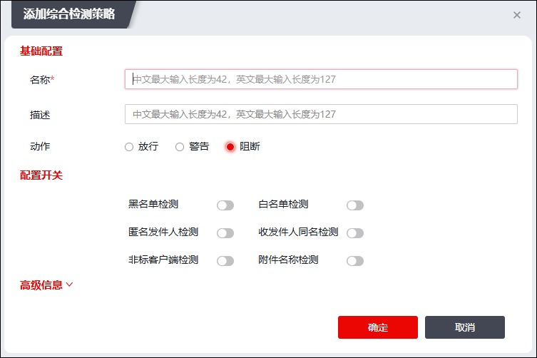

| 步骤1 | 选择 ，激活“综合检测”页签。 |
| 步骤2 | 点击“添加”，弹出“添加综合检测策略”窗口，如下图所示。 |

在设置检测规则时，各项参数的具体说明如下表所示。
参数 |
说明 |
|
|---|---|---|
基本配置 |
名称 |
必填项，设置邮件安全策略名称。 |
描述 |
设置邮件安全策略的描述信息。 |
|
动作 |
设置邮件安全策略的响应动作。可选项：放行、警告、阻断。 “放行”表示允许通过；“阻断”表示禁止该邮件通过；“警告”表示允许通过但向邮件安全日志添加警告。 |
|
黑名单检测 |
设置是否开启黑名单检测，开关为“ |
|
白名单检测 |
设置是否开启白名单检测，开关为“ |
|
匿名发件人检测 |
设置是否开启匿名发件人检测，开关为“ |
|
收发件人同名检测 |
设置是否开启收发件人同名检测，开关为“ |
|
非标客户端检测 |
设置是否开启对邮件客户端检测，开关为“ |
|
附件名称检测 |
设置是否开启附件名称检测，开关为“ |
|
高级信息 |
发件人频率检测 |
设置每分钟同一发件人最大可发送的邮件数量，输入范围：1-1024。 |
发件IP频率检测 |
设置每分钟同一发件IP最大可发送的邮件数量，输入范围：1-1024。 |
|
发件人溯源 |
设置每分钟同一发件人最大可使用的IP地址数量，输入范围：1-64。 |
|
收件人频率检测 |
设置每分钟同一收件人最大可接收的邮件数量，输入范围：1-1024。 |
|
收件IP频率检测 |
设置每分钟同一收件IP最大可接收的邮件数量，输入范围：1-1024。 |
|
邮件长度检测 |
设置单封邮件长度最大值，邮件长度包含邮件正文长度和附件大小，输入范围：1-1024，单位为“MB”。 |
|
附件数量检测 |
设置单封邮件最大可发送的附件数量，输入范围：1-128。 |
|
用户登录频率检测 |
设置每分钟用户登录次数最大值，输入范围：1-1024。 |
|

设置完成后，点击【确定】按钮，完成邮件安全策略添加。
| 步骤3 | 选中已添加的邮件安全策略，点击“ ”、“ ”、“ ”可执行相应的操作。 ”可执行相应的操作。 |
|
²如需进行附件名称检测，需要同时开启基本配置中的“黑名单检测”和“附件名称检测”开关。 |